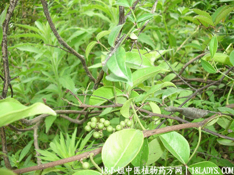

入地金牛(中药材植物名两面针)(植物科目芸香科)原文出处:本文转载自中药大全网。
原文连接:https://www.daquan.com/post/602.html
(本文解释权归中药材天地网兄弟站-18小姐中医植物药方网所有,如需转载请注明出处)
入地金牛(中药材植物名:两面针)(植物科目:芸香科)

别名：落地金牛、两梗叶、牛乸簕。
生长环境：本品为木质藤本。生长于空旷地或有刺灌木丛中。
分布：华南地区，广东以中部和南部较多，此外，越南亦有。
入药部分：根。
采集期：全年。
性味：性微温、味苦。
功能：祛风化气，解毒。消肿散瘀。
主治、用量和用法：1、风湿骨节痛，配伍用；2、小肠疝气：干用5钱至1两，清水煎服；3、跌打，配伍用；4、皮肤痒，配伍用。5、牙痛：干用5钱至1两，煎水含漱、服。
6、蛇伤，配伍用。
验方1：（治跌打瘀肿方）入地金牛1两，
寮刁竹5钱，
透骨消5钱、
韩信草5钱、火逐魂5钱、
小还魂5钱、凤凰肠5钱，为末，每次三钱、炖酒服。外用适量、加酒煮热敷患处。
（方解）入地金牛，寮刁竹舒筋活络，大小还魂强筋骨，透骨消散骨骼之瘀，凤凰肠通利血脉，韩信草行气祛风。构成行气活血，强筋骨治跌打之剂。
（方歌）跌打瘀肿入地牛，寮刁竹与凤凰球，大小还魂韩信草，透骨消兮痛即休，为末酒加炖和煮，敷服兼行效更好。
验方2：（治蛇伤方）入地金牛根1两，蛇总管1两，
半边莲5钱、七星剑5钱、
田基黄5钱、清水三碗半，煎成一碗，冲酒服。
（方解）入地金牛行气祛风，蛇总管，半边莲，七星剑，田基黄解蛇毒，冲酒服之，药力更速。
（方歌）毒蛇咬伤入地牛，田基黄与总管谋，半边莲与七星剑，煎服酒冲毒不愁。
验方3：（治皮肤痒方）入地金牛根，毛射香，六耳苓、
如意草叶各等分，煎水外洗。
（方解）入地金牛，毛射香，六耳苓为祛风热药、如意草为清热解毒药。局部治疗，共效更捷。
（方歌）皮肤生蛇痒不停，入地金牛六耳苓，毛射香飘如意草，煎汤外洗解毒灸。
参考资料：《广州常用草药验方集解》1、治疗痈疽疥疮经验方。
组成：1、消实散：入地金牛、火叶千打捶、香付草、荫香强皮，以上各等分为末。
2、退炎散：土公英、艮
荷叶、
黄藤、扁柏，以上各等分为末。
3、湿毒飞扬散：寮刁竹、半边莲、火头陈、箔荷、扁柏，以上各等分为末。